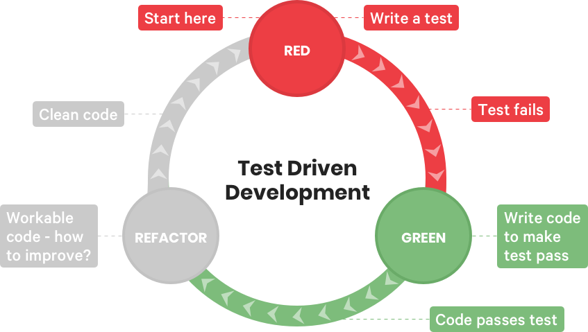

Test Driven Research
Test Driven Development for Research Projects and Academic Code
Dennis Wilson
Outline
- What is TDD?
- Why do TDD for research?
- How to structure a research project with TDD
- Resources for TDD
- Example in Julia
Manual testing
- Running code yourself to see if it does what you expect
- Cell-based code execution (Jupyter) encourages this
- Very time consuming to run
- Definition not rigorous
- Rarely run the same tests over time
Unit tests
an automatic test that exclusively tests internal code- objective: definitive PASS or FAIL response
- once defined, tests are easy to run
- continuous integration tools allow for automatic testing of full suite
- coverage tools show what code is validated
- allows easier code refactoring, cleaner code
Problems
- Time-consuming to write
- Makes changing code harder
- Difficult to write tests
Test Driven Development
Write the unit tests firstIncremental approach that allows for validation of code as you progress

TDD advantages
- Early understanding of specification, needs of the program
- Encourages high coverage rates
- Code is written for being tested, encourages modularity
- Refactoring is easy, encourages clearer code
- Automatic "documentation"
- Dopamine hits on seeing green text
TDD for research
- Identify algorithm components (functions)
- Write tests for individual functions
- Verify component by component instead of full algorithm
- Consider edge cases - inputs that might break a function
- Verify only the constant parts, not all the details
Unit tests vs experiments
| Unit tests | Experiments |
|---|---|
|
|
Unit tests help build the algorithm code. Experiments use the code.
TDD can make writing experiments easier by reusing similar code.
Structuring research projects with TDD
- Understand algorithm, identify components
- Start small, write tests for independent components
- Build on components to advance toward working algorithm
- TDD cycle with increasing complexity, approach full algorithm
- Use automated test of full algorithm as a base for experiment scripts or notebooks
Julia
- Testing with Test, included in base language
- Best used in package development in
test/runtests @testmacro possible anywhere- Example using the Juno IDE
Python
Recommended tools: unittest, pytest
# content of test_sample.py
def inc(x):
return x + 1
def test_answer():
assert inc(3) == 5
$ pytest
=========================== test session starts ============================
platform linux -- Python 3.x.y, pytest-5.x.y, py-1.x.y, pluggy-0.x.y
cachedir: $PYTHON_PREFIX/.pytest_cache
rootdir: $REGENDOC_TMPDIR
collected 1 item
test_sample.py F [100%]
================================= FAILURES =================================
_______________________________ test_answer ________________________________
def test_answer():
> assert inc(3) == 5
E assert 4 == 5
E + where 4 = inc(3)
test_sample.py:6: AssertionError
========================= short test summary info ==========================
FAILED test_sample.py::test_answer - assert 4 == 5
============================ 1 failed in 0.12s =============================
TDD Resources
- French video about TDD
- The Art of Unit Testing
- Hitchhiker's Guide to Python chapter on testing
- Why Most Unit Testing is a Waste
- Coverage tools and CI with Travis
Few resources about TDD for academic code